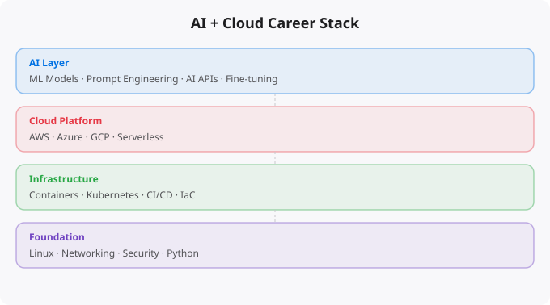

The technology industry is going through one of its biggest transformations in decades. Artificial intelligence has moved from research labs into real production systems, and cloud infrastructure has become the backbone of every serious software operation. When these two forces combine, they do not just create new tools — they create entirely new kinds of jobs, new responsibilities, and new ways to build a career in tech.
If you are a student, a working professional, or someone looking to break into the technology field, understanding this combination is not optional anymore. It is the foundation of what the next decade of tech careers looks like.
Let us be direct about something: AI models do not run on your laptop. The kind of AI that powers real products — language models, image recognition systems, recommendation engines — requires massive compute infrastructure. Training a modern large language model requires thousands of GPUs running for weeks or months. Even running a trained model at scale requires powerful servers, load balancers, auto-scaling systems, and reliable storage.
All of that infrastructure lives in the cloud. AWS, Google Cloud, and Microsoft Azure have built entire product lines specifically for AI workloads. EC2 instances with GPU support, SageMaker for model training and deployment, Vertex AI on Google Cloud, Azure Machine Learning — these are cloud products built specifically because AI needs infrastructure at scale. The implication is clear: if you want to work in AI professionally, you need to understand cloud. And if you are already a cloud professional, understanding AI is becoming a core part of the job.
When two major technology domains merge, the job market creates new roles that never existed before. Here is what is emerging right now in companies that are serious about AI.
AI Infrastructure Engineer — This person builds and maintains the systems that run AI workloads. They design GPU clusters, manage distributed training jobs, optimize model serving pipelines, and ensure that AI systems stay up and perform well under real traffic. This is cloud engineering with an AI-specific focus.
MLOps Engineer — MLOps stands for Machine Learning Operations. This role focuses on the operational side of machine learning: automated model training pipelines, model versioning, A/B testing of different model versions, monitoring model performance over time, and handling model drift when a model's predictions start degrading because the real world has changed. This role borrows heavily from DevOps but applies it to the machine learning lifecycle.
AI Platform Engineer — Large companies build internal AI platforms that other teams use to develop and deploy models. The platform engineer builds and maintains this internal tooling — data pipelines, feature stores, model registries, deployment frameworks. This is software engineering at the intersection of cloud and AI.
Cloud AI Solutions Architect — This senior role involves designing AI-powered systems for clients or business units. They evaluate which AI services to use, how to integrate them with existing infrastructure, what the cost implications are, and how to ensure security and compliance. It requires both deep technical knowledge and the ability to communicate with non-technical stakeholders.
Data Platform Engineer — AI systems are hungry for data. Data platform engineers build the pipelines, data lakes, streaming infrastructure, and transformation systems that feed AI models. Tools like Apache Kafka, Spark, dbt, Airflow, and cloud-native data services are the daily tools of this role.
AIOps Specialist — AIOps uses artificial intelligence to manage and improve IT operations. This includes anomaly detection in system metrics, automated incident response, intelligent alerting, and predictive capacity planning. Companies with complex infrastructure are investing heavily in this area.
If you want to build a career at the intersection of AI and cloud, here is the honest picture of what you need to know. You do not need to master all of this at once — but you need a roadmap.
Cloud fundamentals are non-negotiable. Pick one major provider — AWS, GCP, or Azure — and learn it well. Understand compute (VMs and containers), storage (object storage, databases), networking (VPCs, load balancers), IAM (identity and access management), and monitoring. Get a foundational certification if you can — AWS Cloud Practitioner or Solutions Architect Associate, Google Associate Cloud Engineer, or Azure Fundamentals.
Containers and orchestration have become the standard way to deploy AI models and services. Docker for packaging applications, Kubernetes for running them at scale. If you know cloud but not containers, you are missing a critical skill. Python programming is the lingua franca of both data science and cloud automation. You do not need to be a software engineer, but you need to be comfortable writing Python scripts, working with APIs, and reading existing code.
Basic machine learning concepts matter even if you are not building models. Understanding what a model is, how it is trained, what inference means, and why model monitoring is important will help you work effectively with data scientists and ML engineers. Data engineering basics — understanding SQL, knowing how data pipelines work, being familiar with ETL concepts, and knowing the major data tools will make you far more effective in any AI+Cloud role.
The biggest mistake people make is trying to learn everything at once. That leads to shallow knowledge in many areas and expertise in none. Here is a practical starting point: Start with cloud. Spend two to three months learning one cloud provider seriously. Build real projects — deploy a web application, set up a database, configure networking, write infrastructure as code with Terraform or CloudFormation. Get a foundational certification to validate your knowledge.
Then add Python. You do not need to become a Python expert overnight. Learn enough to automate cloud tasks, work with APIs, and write simple data processing scripts. This alone will make you significantly more effective. Then learn containers — Docker first, then basic Kubernetes. Deploy your cloud projects in containers. Understand why containerization matters for reproducibility and scalability.
Finally, learn the AI layer. Experiment with cloud AI services — AWS SageMaker, Google Vertex AI, Azure ML. Understand how to deploy a pre-trained model as an API endpoint. Understand what monitoring AI systems involves. The key is building real things at each stage. A portfolio of actual projects matters more than certificates alone.
The traditional separation between "AI person" and "cloud person" is disappearing fast. The most valuable professionals in the next five years will be those who can think across both domains — who understand the infrastructure that makes AI possible and the AI capabilities that can enhance infrastructure management.
This is not about becoming a jack of all trades. It is about developing a systems-level understanding — seeing how the pieces fit together. Companies are not looking for someone who just knows cloud commands or just knows ML theory. They are looking for people who can own a system end to end: design it, build it, deploy it, monitor it, and improve it.
That is where the real opportunity is. And it is more accessible than you might think. The barriers to entry have never been lower — free tier cloud accounts, open-source tools, freely available courses, and global communities of practice all make this a realistic goal for anyone willing to put in consistent effort.
Disclaimer:
This article discusses industry trends and learning paths.
It does not guarantee employment outcomes.
The convergence of AI and cloud is creating roles that did not exist 5 years ago and pay significantly above the standard software engineering market. These roles require a combination of ML understanding, cloud infrastructure expertise, and software engineering skill that is rare enough to command 30-50% premiums over equivalent experience in traditional roles.
ML Engineer / MLOps Engineer:
Skills: Python, PyTorch/TensorFlow, Docker, Kubernetes,
MLflow, Airflow, cloud ML services (SageMaker, Vertex AI)
What they do: Train, deploy, monitor ML models in production
Salary (India): Rs. 20-50 LPA mid-level
AI Platform Engineer:
Skills: Cloud infrastructure, Kubernetes, GPU scheduling,
distributed training, model serving (Triton, TorchServe)
What they do: Build the infrastructure ML teams deploy models on
Salary (India): Rs. 25-60 LPA senior
Cloud AI Architect:
Skills: AWS/GCP AI services, solution design, cost optimisation,
data pipeline design, security for ML workloads
What they do: Design AI-enabled cloud architectures for enterprises
Salary (India): Rs. 30-80 LPA
LLM Application Developer:
Skills: Python, LangChain/LlamaIndex, vector databases,
prompt engineering, RAG systems, API integration
What they do: Build products powered by large language models
Salary (India): Rs. 20-45 LPA (rapidly growing demand)The fastest path to AI+Cloud skills: start with cloud fundamentals (AWS SAA or equivalent), add Docker and Kubernetes (our series covers both), then specialise in AI infrastructure. For ML engineering: fast.ai for deep learning fundamentals (practical, not mathematical). For cloud ML: AWS SageMaker documentation and Coursera's Machine Learning Engineering for Production specialisation. For LLM applications: LangChain documentation, LlamaIndex tutorials, and building real projects using OpenAI or Anthropic APIs.
The portfolio for AI+Cloud roles needs to demonstrate: deploying an ML model as an API endpoint, setting up a training pipeline with experiment tracking (MLflow), monitoring model performance over time, and ideally building a RAG (Retrieval Augmented Generation) application that retrieves information from custom documents.
For MLOps/ML Engineering: yes, you need to understand how models are trained and what affects their performance. For AI Platform Engineering: you need infrastructure skills more than ML theory. For LLM application development: you need API integration skills and prompt engineering, not deep ML theory. The entry points vary by role.
MLOps (Machine Learning Operations) applies DevOps principles to ML: automated training pipelines, model versioning, continuous deployment of new models, monitoring for model drift. It is growing because most ML projects fail in production -- not due to model quality but due to poor deployment and monitoring practices. MLOps engineers make ML production-ready.
RAG (Retrieval Augmented Generation) combines large language models with information retrieval. Instead of asking the LLM to answer from training data alone, RAG retrieves relevant documents from a vector database and provides them as context. This allows LLMs to answer questions about your private data, current events, or specialised domains they were not trained on. It is the foundation of most enterprise AI applications in 2025-2026.
Yes. India is one of the fastest-growing tech markets globally. These skills are in high demand across startups, MNCs, and product companies in Bangalore, Hyderabad, Pune, and Mumbai.
Follow official documentation, tech blogs from practitioners, GitHub repositories, and communities like Dev.to, Hashnode, and Reddit. Avoid news that creates urgency without substance.
Official documentation first. Then practical tutorials. Then build real projects. SRJahir Tech articles are written from real production experience — bookmark the series that matches your learning goal.
Consistent daily practice for 3-6 months produces real, usable skills. The key is building projects, not just reading. Every article on SRJahir Tech includes practical examples you can implement today.
Yes. All articles on SRJahir Tech are completely free. No paywalls, no subscriptions. Quality technical education should be accessible to everyone, especially aspiring engineers in India.